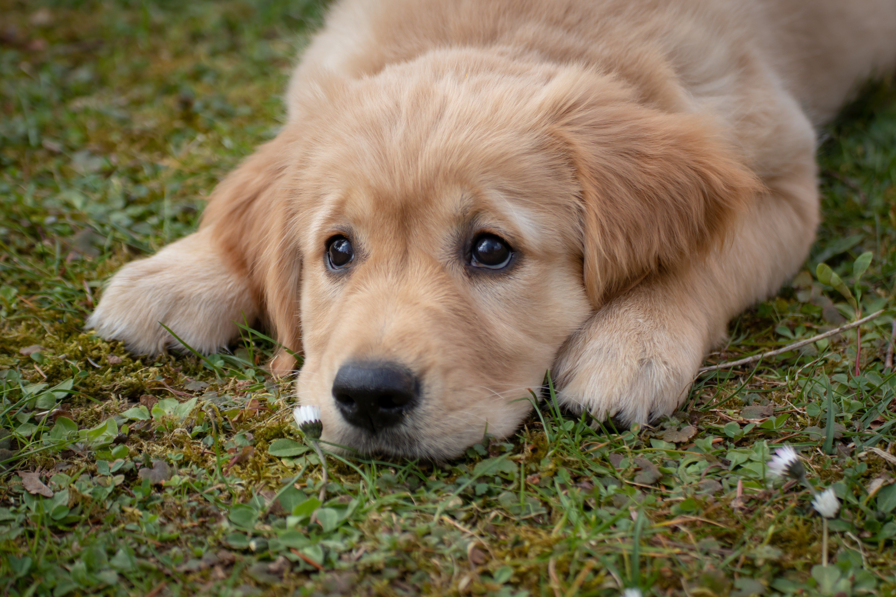
Um pequeno gesto pode salvar uma vida
Animais vítimas de maus-tratos precisam de cuidado, amor e apoio para recomeçar. Sua ajuda é o primeiro passo para uma nova história.
Histórias de transformação
Esta galeria contém imagens de resgate que podem ser fortes.
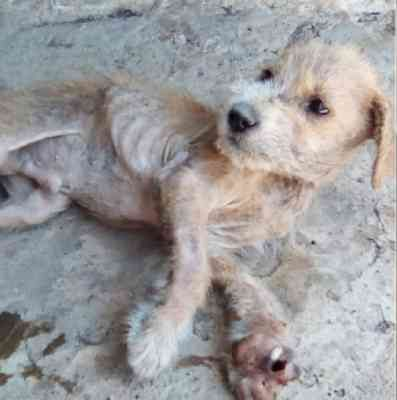
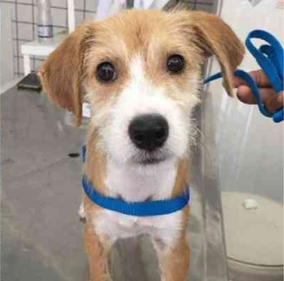
Don
Don era ainda filhote quando foi atropelado e passou dias na rua sem cuidado algum. Resgatado pelo Abrigo Animais Aumigos, ele foi adotado e hoje vive feliz e paparicado em sua nova casa.
Esta galeria contém imagens de resgate que podem ser fortes.
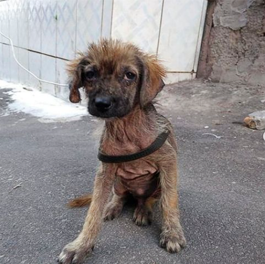
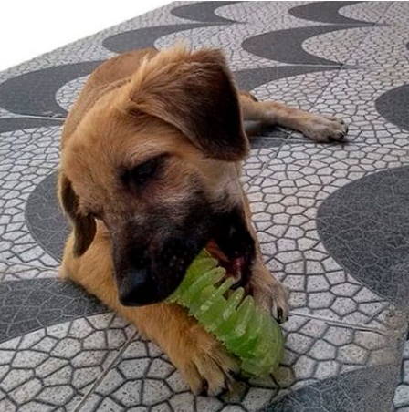
Sardinha
O filhote Sardinha, de 4 meses, foi resgatado e se recuperou em poucos dias, após um tratamento para anemia e erliquiose, conhecida como doença do carrapato.
Esta galeria contém imagens de resgate que podem ser fortes.
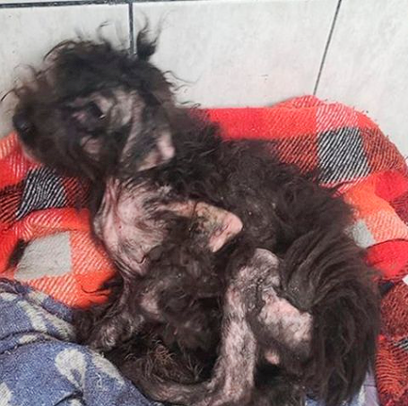
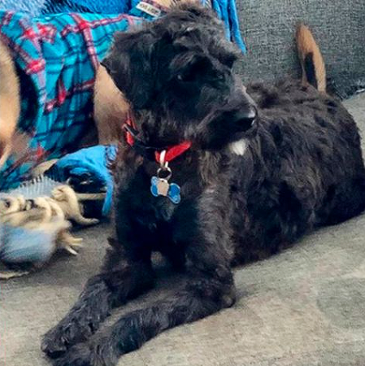
Theo
Resgatado com problema sério de pele, quase já sem pelo e o pouco que tinha estava embolado. Além disso, estava desnutrido, tinha anemia e doença do carrapato. Na segunda foto, ele aparece cheio de saúde e alegria após um bom banho, tosa, tratamento e uma dose extra de carinho. Está à espera de adoção no AdoteDog.
Esta galeria contém imagens de resgate que podem ser fortes.
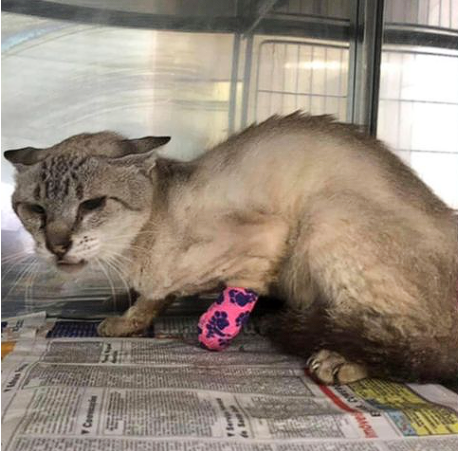
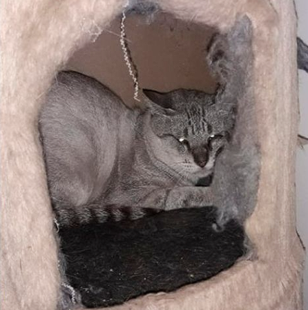
Guerreiro
O gatinho Guerreiro foi encontrado com a pata necrosada, que precisou ser amputada, passou dias se recuperando em uma clínica veterinária, até finalmente ser adotado.
Esta galeria contém imagens de resgate que podem ser fortes.
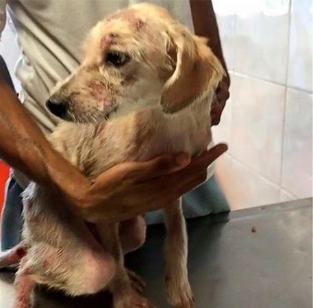
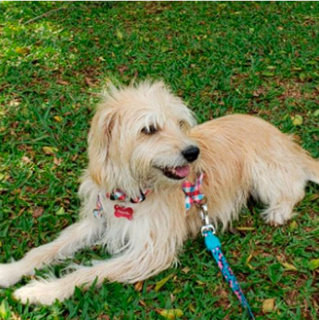
Margarida
Margarida nasceu em um abrigo que não tinha condições de alimentar seus animais resgatados. Por conta de um problema sério de desnutrição, sua coordenação motora não se desenvolveu adequadamente. Quando foi resgatada, ela mal conseguia andar. Foram longos 14 meses de tratamento e três cirurgias para ela se recuperar. Foi adotada e vive feliz com sua família.
Esta galeria contém imagens de resgate que podem ser fortes.
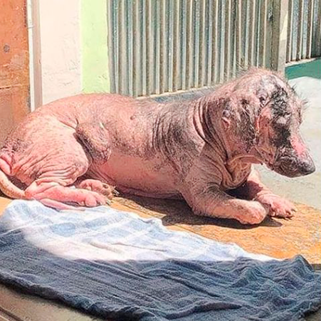
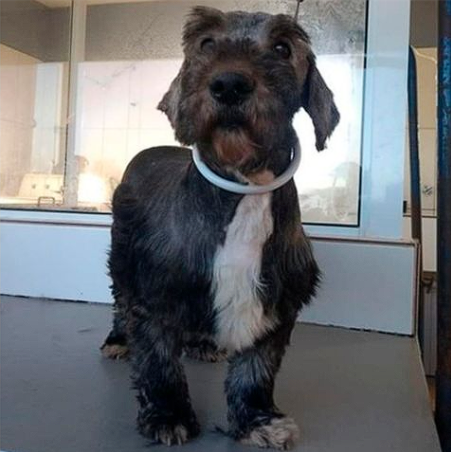
Pelado
Um cão encontrado praticamente sem pelo, triste e com uma infecção gravíssima. A segunda foto foi feita 40 dias após o resgate. Pelado foi adotado e vive rodeado de carinho.
ONGs que resgatam e cuidam em Itu
ASPA Itu
Associação de Socorro e Proteção aos Animais de Itu. Atuando há anos na proteção animal.
Doar via WhatsApp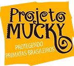
ONG MUnkey
Dedicada ao resgate e reabilitação de animais em Itu, focando em casos críticos e abandono.
Doar via WhatsApp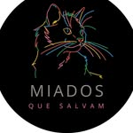
Miados que salvam
ONG voltada para a proteção e adoções de gatos em situações de abandono, promovendo resgate, acolhimento e adoção responsável.
Doar via WhatsApp